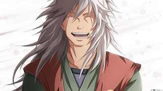

OGATA SHUMA HIROYUKI(JIRAIYA)
Jiraiya was one of Konohagakure's Sannin. Famed as a hermit and pervert of stupendous ninja skill, Jiraiya travelled the world in search of knowledge that would help his friends, the various novels he wrote, and, posthumously, the world in its entirety – knowledge that would be passed on to his godson and final student, Naruto Uzumaki.
PRINCE VEGETA
.jpg)
Vegeta, more specifically Vegeta IV , recognized as Prince Vegeta , is the prince of the fallen Saiyan race and the husband of Bulma, the father of Trunks and Bulla, the eldest son of King Vegeta, as well as one of the main characters of the Dragon Ball series.Regal, egotistical, and full of pride, Vegeta was once a ruthless, cold-blooded warrior and outright killer, but later abandoned his position in the Frieza Force for a peaceful life on Earth. He would repeatedly fight alongside Universe 7's most powerful warriors in order to protect Earth and his family, as well as to surpass Goku in power.
SATORU GOJO
.jpg)
Satoru Gojo is one of the main protagonists of the Jujutsu Kaisen series. He is a special grade jujutsu sorcerer and widely recognized as the strongest in the world. Satoru is the pride of the Gojo Family, the first person to inherit both the Limitless and the Six Eyes in four hundred years. He works as a teacher at the Tokyo Jujutsu High and uses his influence to protect and train strong young allies.
MONKEEY.D.LUFFY
.jpg)
Straw Hat",is the founder and captain of the increasingly infamous and powerful Straw Hat Pirates, as well as the most powerful of its top fighters.He desires to find the legendary treasure left behind by the late Gol D. Roger and thereby become the Pirate King, which would help facilitate an unknown dream of his that he has told only to Shanks, his brothers, and crew. He believes that being the Pirate King means having the most freedom in the world.
RYOMEN SUKUNA

Sukuna is king of the curses.He was incarnated when his former host yuji itadori consumed one of sukuna's finger.sukuna finger were cursed object.sukuna is 1000+ year old. When he was alive he was a human he was killed by his fellow sorcerers.sukuna is evil to the core.